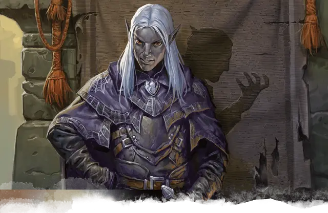

Заранн А'Дарагон
Xarann A'Daragon
Средний Гуманоид (Эльф), нейтрально-злой, именной НИП

Класс Доспеха 15 (проклепанная кожа)
Хиты 78 (12к8 + 24)
Скорость 30 футов
| мод | спас | ||
|---|---|---|---|
| СИЛ | 11 | +0 | +0 |
| ЛОВ | 16 | +3 | +6 |
| ТЕЛ | 14 | +2 | +2 |
| мод | спас | ||
|---|---|---|---|
| ИНТ | 13 | +1 | +4 |
| МДР | 11 | +0 | +0 |
| ХАР | 10 | +0 | +0 |
Навыки Акробатика +6, Восприятие +3, Обман +3, Скрытность +9
Сопротивление урону яд
Чувства тёмное зрение 120 футов, пассивное Восприятие 13
Языки Воровской жаргон, Подземный, Эльфийский
Опасность 8 (3900 опыта)
Бонус мастерства +3
Особенности
Особое снаряжение. Заранн носит пивафви (эльфийский плащ) [piwafwi (cloak of elvenkind)]. Он теряет свою магию,если подвергается воздействию солнечного света без перерыва в течение 1 часа. К плащу приколот обсидиановый скарабей с выгравированным символом Дома Авриндар.
Убийство. В своём первом ходу Заранн совершает с преимуществом броски атаки по существам, которые ещё не совершали ход. Все попадания Заранна по захваченным врасплох существам являются критическими попаданиями.
Увёртливость. Если Заранн подвергается действию эффекта, позволяющего совершить спасбросок Ловкости, чтобы получить только половину урона, Заранн вместо этого не получает урон, если преуспеет в спасброске, и получит лишь половину урона, если провалит спасбросок.
Скрытая атака (1/ход). . Заранн причиняет дополнительный урон 14 (4к6), если попадает по цели атакой оружием, совершённой с преимуществом к броску атаки, или же если цель находится в пределах 5 футов от дееспособного союзника Заранна, и Заранн совершал бросок атаки без помехи.
Наследие фей. Заранн совершает с преимуществом спасброски от очарования, и магия не может её усыпить.
Врождённое колдовство. Базовой характеристикой для врождённых заклинаний Заранна является Харизма (Сл спасброска от заклинания 11). Он может накладывать следующие заклинания, не нуждаясь в материальных компонентах:
• Неограниченно:пляшущие огоньки [dancing lights];
• 1/день каждое:левитация [levitate] (только на себя), огонь фей [faerie fire], тьма [darkness].
Чувствительность к солнечному свету. Находясь на солнечном свету, Заранн совершает с помехой броски атаки, а также проверки Мудрости (Восприятие), полагающиеся на зрение.
Действия
Мультиатака. Заранн совершает две атаки коротким мечом.
Короткий меч. Рукопашная атака оружием: +6 к попаданию, досягаемость 5 футов, одна цель. Попадание: Колющий урон 6 (1к6 + 3), и цель должна совершить спасбросок Телосложения Сл 15, получая урон ядом 24 (7к6) при провале, или половину этого урона при успехе.
Лёгкий арбалет. Дальнобойная атака оружием: +6 к попаданию, дистанция 80/320 футов, одна цель. Попадание: Колющий урон 7 (1к8 + 3), и цель должна совершить спасбросок Телосложения Сл 15, получая урон ядом 24 (7к6) при провале, или половину этого урона при успехе.